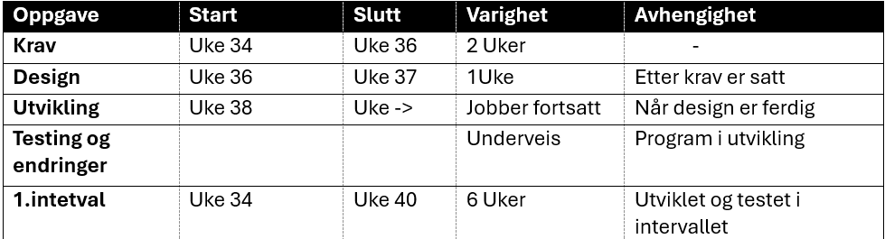

Status & Nøkkeltall
HVLtopia har allerede oppnådd flere viktige milepæler i arbeidet med å gjøre Bergen til en bærekraftig by. Gjennom innovativ teknologi og grønn mobilitet har vi redusert byens karbonutslipp og forbedret livskvaliteten for innbyggerne. Dette er noen av våre viktigste resultater så langt:
Reduksjon i karbonutslipp
15 % reduksjon i byens karbonutslipp hittil
Grønn mobilitet
1000 el-sykler og 50 el-busser i drift
Smarte sensorer
Smarte sensorer overvåker luftkvalitet i sanntid.
Energi-effektivisering
10 offentlige bygg har blitt oppgradert til energieffektive løsninger
Prosjektplan
Prosjektmål og Visjon
HVLtopia har en klar visjon om å gjøre Bergen til en bærekraftig og fremtidsrettet by. Gjennom innovative teknologier, grønn mobilitet og fokus på miljø, jobber vi mot konkrete mål som vil forbedre livskvaliteten for alle byens innbyggere, både nå og i fremtiden
-
Redusert Karbonavtrykk
Visjon
HVLtopia har som overordnet visjon å redusere byens karbonutslipp betydelig for å bidra til kampen mot klimaendringer. Vårt mål er å kutte byens karbonavtrykk med 20 % innen 2030 ved hjelp av energieffektive løsninger og grønn teknologi.
Prosjektmål
For å oppnå denne visjonen jobber vi med å implementere energisparende tiltak i både offentlig og privat sektor, og fremmer bruk av fornybar energi. Ved å fokusere på effektiv energibruk og redusere utslipp fra transport, skal Bergen bli et forbilde for andre byer i bærekraftig byutvikling.
-
Grønn Mobilitet med El-sykler
Visjon
Vi ser for oss en by der grønn mobilitet er lett tilgjengelig for alle. HVLtopia ønsker å gjøre det enklere for innbyggerne å velge miljøvennlige alternativer til bilkjøring, og fremtiden vil preges av el-sykler og el-busser som dekker hele Bergen
Prosjektmål
Innen 2025 planlegger vi å utvide vårt tilbud av el-sykler til 1000 tilgjengelige sykler i hele byen. I tillegg vil flere el-bussruter bli lansert for å redusere trafikkbelastningen og fremme bærekraftig transport. Målet er å redusere privatbilisme og CO2-utslipp knyttet til daglig transport.
-
Smarte Sensorteknologier
Visjon
HVLtopia har en visjon om å skape en smartere, mer tilkoblet by der sanntidsovervåking av miljødata bidrar til rask og effektiv handling. Vi ønsker å bruke teknologi til å forbedre luftkvaliteten og skape et tryggere og sunnere bymiljø.
Prosjektmål
Prosjektet har som mål å installere smarte sensorer i alle byens bydeler, som overvåker luftkvalitet, temperatur og støynivå. Ved å samle inn og analysere data i sanntid kan vi iverksette tiltak for å redusere forurensning og støy, noe som direkte vil forbedre helsen og trivselen til byens innbyggere.
-
Energi-effektivisering i Byens Bygg
Visjon
HVLtopia har som visjon å gjøre Bergen til en ledende by innen energieffektivitet, der både offentlige og private bygninger bruker minimalt med energi, reduserer karbonutslipp, og er bærekraftige i fremtiden. Vi ser for oss en by hvor alle bygninger opererer med høyeste standard for energieffektivisering, og der ressursene blir utnyttet på best mulig måte.
Prosjektmål
Målet er å fortsette oppgraderingen av både offentlige og private bygg i Bergen med energieffektive løsninger. Etter å ha oppgradert 10 offentlige bygninger, sikter HVLtopia mot å oppgradere 50 flere bygninger innen 2025. Vi vil fokusere på implementering av smarte energistyringssystemer, bruk av fornybar energi, og bedre isolasjon for å redusere energiforbruket i bygningene med minst 30 % innen 2030.
Hensikt
Hvorfor er Hvlprosjektet viktig?
Adressering av byens utfordringer
Bergen opplever økende miljøutfordringer, som forurensning, trafikk og et stadig voksende folketall. HVLtopia er utviklet for å møte disse utfordringene med innovative og bærekraftige løsninger.
Forbedre livskvaliteten for innbyggerne
Ved å implementere smarte transportsystemer og redusere forurensning, vil HVLtopia forbedre livskvaliteten til innbyggerne i Bergen og bidra til et tryggere, sunnere bymiljø
Bidra til byens bærekraftige fremtid
HVLtopia spiller en viktig rolle i Bergens utvikling som en bærekraftig by. Gjennom grønn teknologi og energieffektivisering skal prosjektet bidra til å redusere byens karbonutslipp med 20 % innen 2030.
Samsvar med globale bærekraftsmål
Prosjektet er i samsvar med FNs bærekraftsmål og støtter globale mål om å redusere karbonutslipp og fremme bærekraftig byutvikling.
Bakgrunn
VLtopia ble startet for å møte behovet for smartere byinfrastruktur i takt med Bergens voksende befolkning. Prosjektet fokuserer på bærekraftige løsninger for å sikre byens fremtid.
Byens vekst og utfordringer
Bergen har opplevd en rask befolkningsvekst, noe som har ført til økt press på byens infrastruktur, transportnettverk og miljø. Tradisjonelle løsninger er ikke lenger tilstrekkelige for å møte disse utfordringene.
Miljøutfordringer
Byen sliter med høye nivåer av luftforurensning og økende karbonutslipp, noe som påvirker både helsen til innbyggerne og byens naturlige omgivelser. Klimaendringene gjør det nødvendig med raskere tiltak for å redusere byens miljøavtrykk
Behovet for teknologi og innovasjon
Teknologiske fremskritt innen smarte byer gir Bergen muligheten til å benytte data, sanntidsovervåking og innovative løsninger for å adressere utfordringer knyttet til transport, energi og miljø.
Globalt fokus på bærekraftig utvikling
Som en del av Norges nasjonale bærekraftsmål og FNs globale klimaagenda, har Bergen forpliktet seg til å redusere karbonutslipp og sikre en mer bærekraftig fremtid for kommende generasjoner.
HVLtopia som en løsning
HVLtopia ble initiert for å kombinere teknologi, grønn energi og smarte løsninger for å skape en by som både kan møte fremtidige utfordringer og sikre en bedre livskvalitet for alle innbyggere.